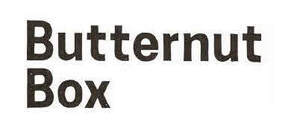
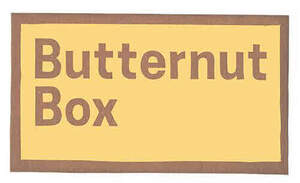
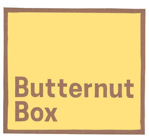
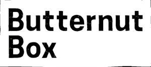
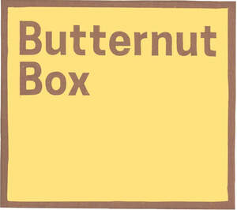

Trade Mark Journal No.2025/029 18 July 2025
UK00004167369 28 February 2025 (5,16,18,21,28,31,35,36,41,43,44)
Mark 1

Mark 2

Mark 3

Mark 4
Mark 5

Mark 6

International priority date claimed: 28 August 2024
(China)
(80618875)
- Class 5
- Dietetic food and substances adapted for veterinary use; nutritional supplements for animals and pets in the nature of broth, bone broth and broth powder; food supplements for animals and pets; dietary and nutritional supplements for animals and pets; vitamin supplements for animals and pets; pet food additives in the form of vitamins and minerals; protein supplements for animals and pets; medicated supplements for foodstuffs for animals; feed supplements for veterinary use; food, herbal, dietary and nutritional supplements in the form of pet treats; food, herbal, dietary and nutritional supplements for improving joint and gut health in animals and pets; food, herbal, dietary and nutritional supplements for assisting digestion in animals and pets; food, herbal, dietary and nutritional supplements for calming animals and pets; herbal supplements for pets and animals; anti-oxidant supplements for pets and animals; pharmaceutical preparations for the treatment of worms in pets; medicated shampoos for pets; skin ointment for pets; pet odour neutraliser; anti-flea collars for pets; herbal anti-itch and sore skin ointment for pets; disposable housebreaking mats for pets; flea, tick and worm treatment preparations for pets; bitter tasting pet training aid in the form of a spray to prevent pets from licking, chewing and biting on objects; hygienic preparations for veterinary use; dog washes [insecticides]; dog lotions for veterinary purposes.
- Class 16
- Advent calendars; advent calendars for pets; printed matter; paper and bags for wrapping and packaging; plastic and paper bags for pet waste disposal; scoops made of card for the disposal of pet excrement; gift wrap; training manuals; printed training materials; paper pet crate mats.
- Class 18
- Animal clothing; animal shoes; animal apparel; dog parkas; dog coats; dog leashes, dog leads and dog collars; leads for animals, harnesses for animals; collars for animals; animal bandanas; covers and wraps for animals; dog waste bag dispensers adapted for use with leashes; feed bags for animals; garments for pets; bags; tote bags.
- Class 21
- Pet drinking bowls; pet feeding bowls; pet lick mats; pet treat jars; brushes and combs for pets; toothbrushes for pets; scoops for the disposal of pet waste.
- Class 28
- Toys for dogs; imitation bones being toys for dogs; toys, games and playthings for pet animals; ball launchers for pets; tennis balls.
- Class 31
- Animal foodstuffs; dog food; food products for animals; freshly prepared animal food; cooked animal and pet food; pet food for dogs; dog biscuits; edible dog treats; edible treats for pets; edible chews for pets; dog beverages; animal biscuits, animal beverages, mixed animal feed, animal feed preparations; aromatic sand [litter] for pets; cereals preparations being food for animals; bedding materials for animals; dog food containing meats, fruits and vegetables; dog food containing fish and vegetables; vegan dog food; dog food containing fruit and vegetables; edible dog treats made from milk; puffed dog treats; foods containing broth for feeding dogs; dog, pet and animal food in the nature of broth; vegan dog treats and chews; preparations for making broth for feeding dogs; edible chews made from milk; edible chews made from milk with honey and camomile.
- Class 35
- Advertising, particularly services for the promotion of goods; loyalty, incentive and bonus program services; merchandising; product demonstrations and product display services; providing consumer product advice; provision of information and advice to consumers regarding the selection of products and items to be purchased; provision of information and advice to consumers regarding the selection of animal products and items to be purchased; promotion of goods and services through sponsorship; promotion of goods and services through sponsorship of events; retail services, online retail store services, wholesale services and pop-up store retail services, all connected with the sale of subscription boxes containing pet products; retail services, online retail store services, wholesale services and pop-up store retail services connected with the sale of subscription boxes containing food, pet food, animal food and/or dog food; retail services, online retail store services, wholesale services and pop-up store retail services connected with the sale of subscription boxes containing pet accessories, pet grooming apparatus and implements, pet food, pet clothing, pet treats and pet cosmetics; retail services connected with the sale of pet food and pet treats via a subscription; retail services connected with the sale of animal food, toys, accessories, medication, cosmetics, apparel, leads and collars via a subscription; retail including temporary and ‘pop-up’ store services, online retail, mail order, and wholesale services, all in relation to dietetic food and substances adapted for veterinary use, nutritional supplements for animals and pets in the nature of broth, bone broth and broth powder, food supplements for animals and pets, dietary and nutritional supplements for animals and pets, vitamin supplements for animals and pets, pet food additives in the form of vitamins and minerals, protein supplements for animals and pets, medicated supplements for foodstuffs for animals, feed supplements for veterinary use, food, herbal, dietary and nutritional supplements in the form of pet treats, food, herbal, dietary and nutritional supplements for improving joint and gut health in animals and pets, food, herbal, dietary and nutritional supplements for assisting digestion in animals and pets, food, herbal, dietary and nutritional supplements for calming animals and pets, herbal supplements for pets and animals, anti-oxidant supplements for pets and animals, pharmaceutical preparations for the treatment of worms in pets, shampoos for pets, skin ointment for pets, pet odour neutraliser, anti-flea collars for pets, herbal anti-itch and sore skin ointment for pets, disposable housebreaking mats for pets, flea, tick and worm treatment preparations for pets, bitter tasting pet training aid in the form of a spray to prevent pets from licking, chewing and biting on objects, hygienic preparations for veterinary use, dog washes [insecticides], dog lotions for veterinary purposes, advent calendars, advent calendars for pets, printed matter, paper and bags for wrapping and packaging, plastic and paper bags for pet waste disposal, scoops made of card for the disposal of pet excrement, gift wrap, training manuals, printed training materials, paper pet crate mats, animal clothing, animal shoes, animal apparel, dog parkas, dog coats, dog leashes, dog leads and dog collars, leads for animals, animal bandanas, harnesses for animals, collars for animals, bags, tote bags, covers and wraps for animals, dog waste bag dispensers adapted for use with leashes, pet drinking bowls, pet feeding bowls, pet lick mats, pet treat jars, brushes and combs for pets, toothbrushes for pets, scoops for the disposal of pet waste, feed bags for animals, garments for pets, toys for dogs, imitation bones being toys for dogs, tennis balls, toys, games and playthings for pet animals, ball launchers for pets, animal foodstuffs, dog food, food products for animals, freshly prepared animal food, cooked animal and pet food, pet food for dogs, dog biscuits, edible dog treats, edible treats for pets, edible chews for pets, dog beverages, animal biscuits, animal beverages, mixed animal feed, animal feed preparations, aromatic sand [litter] for pets, cereals preparations being food for animals, bedding materials for animals, dog food containing meats, fruits and vegetables, dog food containing fish and vegetables, vegan dog food, dog food containing fruit and vegetables, edible dog treats made from milk, puffed dog treats, foods containing broth for feeding dogs, dog, pet and animal food in the nature of broth, vegan dog treats and chews, preparations for making broth for feeding dogs, edible chews made from milk, edible chews made from milk with honey and camomile, dispensers for pet waste bags, pet accessories, pet grooming implements, apparatus and preparations, pet bedding; rental of point of sale equipment; computerised point-of-sale data collection services for retailers; sample distribution; conducting of commercial events; event marketing; arranging and conducting of promotional events; information, advisory and consultancy services related to all of the foregoing.
- Class 36
- Insurance services in the field of pets; pet insurance underwriting; insurance brokerage relating to pets.
- Class 41
- Education; providing of training; entertainment; entertainment and education in the field of animal nutrition, animal training, food preparation and cooking; education, training and workshops relating to nutrition and animal nutrition; practical training; instruction in nutrition and animal nutrition [not medical]; animal training; organisation of events and competitions; organisation of events relating to charitable promotions; provision of educational and entertainment information; arranging and conducting of live entertainment events; live entertainment services; live demonstrations for entertainment and educational purposes; entertainment in the nature of live cooking and food preparation demonstrations; electronic publication; creation of podcasts; multimedia publishing; on-line publication of electronic books and journals; providing electronic publications, guides and web blogs; provision of and publication of audio, video and multimedia productions and publications; publication of books and texts; production of videos; video entertainment services; production of training videos; providing online videos, not downloadable; arranging of contests; arranging of visual entertainment; entertainment by means of roadshows; education and information services including the production of audio and/or visual content accessible via smartphones, tablets, personal computers, laptops, smart TVs and other communication devices; online entertainment and education; entertainment and training videos including in the form of a vlog via the Internet on websites, blogs and social media intended for that purpose; provision of exercise, nutrition and animal nutrition online videos; entertainment and education provided in online virtual worlds, online games and metaverses; information, advisory and consultancy services in relation to the foregoing.
- Class 43
- Services for providing food and drink; provision of facilities for the consumption of food and alcoholic and non-alcoholic beverages; restaurant services; catering services; provision of temporary accommodation; animal boarding; café services including pop-up café and animal café services; providing food and drink to animals and pets; information, advisory and consultancy services in relation to the foregoing.
- Class 44
- Nutritional guidance; animal nutrition guidance; nutrition and dietetic consultancy and advice for animals and humans; provision of information relating to nutrition and animal nutrition; dietary guidance; dietary guidance for animals; services for the care of pet animals; advice and consultancy regarding the care of pet animals; advice relating to the feeding of animals; veterinary services; veterinary, animal care and animal feeding advice provided via a helpline; information, advisory and consultancy services in relation to the foregoing.
Dogmates Limited
Representative: Springbird IP Limited